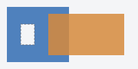

Pointing device interaction with an image associated with a set of layered shapes per the above
algorithm must result in the relevant user interaction events being first fired to the top-most shape covering the
point that the pointing device indicated, if any, or to the image element itself, if there is no shape covering that
point.
HTML §4.8.14.2
Each log lists the target of the clicks in its stage.
The shapes are layered in reverse tree order (so the last specified area element in the map is the bottom-most
shape, and the first element in the map, in tree order, is the top-most shape).

target=orange, first in the map. The
dashed hole, an area without href: target=hole, and no link followed.interior is established using the even-odd rule: a point of the star,
target=star-area; the pentagon in its middle, target=star, the img.